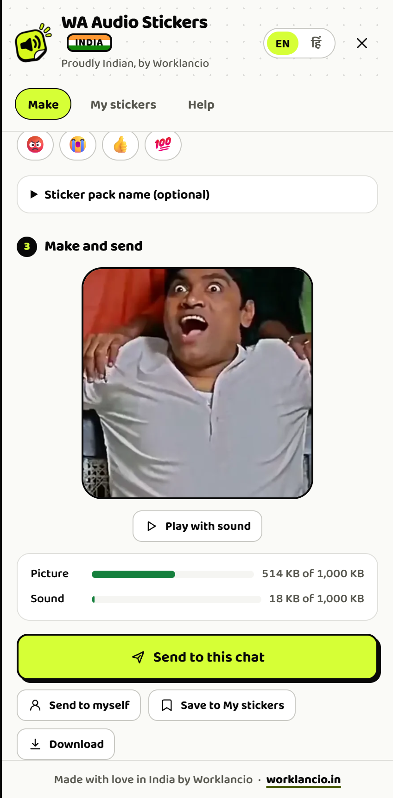
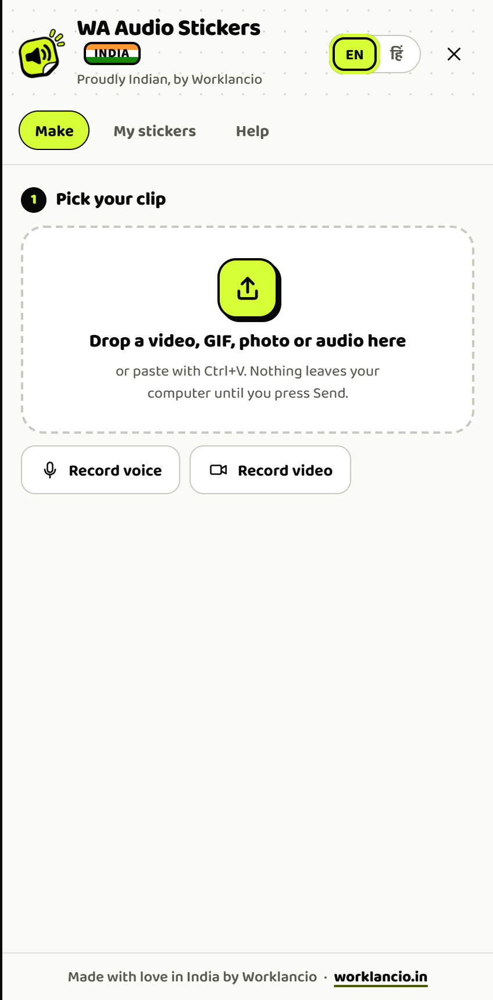
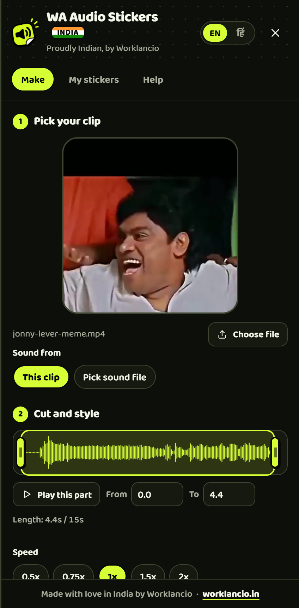
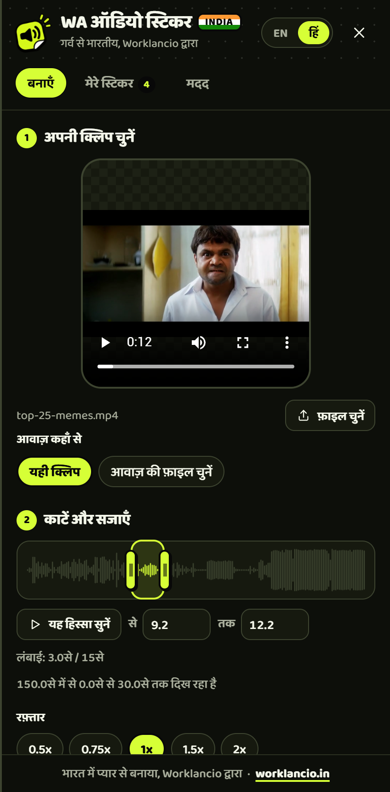

WA Audio Stickers India is a free Chrome extension that turns any video, GIF, photo or your own voice into a WhatsApp sticker with sound, and sends it from WhatsApp Web in seconds.

Built from scratch by our team, with features you will not find in other audio sticker tools.
Works on Chrome, Edge and Brave (version 116 or newer) on Windows, Mac and Linux.
chrome://extensions (or edge://, brave://).Light and dark, English and Hindi. It follows WhatsApp Web's theme by itself.



We have no server. Your clips, chats and contacts never reach us.
Unofficial. Not made by, linked to or approved by WhatsApp or Meta. Please send stickers kindly, one at a time, to people who know you. Full details in SECURITY.md.
किसी भी वीडियो, GIF, फ़ोटो या अपनी आवाज़ से आवाज़ वाले WhatsApp स्टिकर बनाएँ। मुफ़्त, निजी, और पूरी तरह भारत में बना। ऐप को हिंदी में चलाने के लिए बस हिं दबाएँ।
Short answers about WhatsApp audio stickers. Full guide: How to send audio stickers on WhatsApp.
WhatsApp audio stickers (also called sound stickers) are animated stickers that play a short sound when you tap them. WA Audio Stickers India lets you make them from any video, GIF, photo or your own voice and send them from WhatsApp Web.
Install the free WA Audio Stickers India extension in Chrome, Edge or Brave, open web.whatsapp.com, click the lime tab, pick or record a clip, press Make sticker, then Send to this chat. Your friend taps the sticker and hears the sound.
Yes. It is completely free and open source under the MIT licence, with no sign-up, no ads and no paid version.
Yes. Everything is made on your own computer. The extension only asks for storage and web.whatsapp.com, has no server and no tracking, and sends only when you click, one sticker at a time.
Yes. You can add captions in Hindi, English or Hinglish, and the whole app can switch to Hindi with one tap.
Yes, if their WhatsApp is up to date. The sound plays on Android, iPhone and WhatsApp Web when they tap the sticker.
It runs on a computer, in WhatsApp Web. Use Send to myself, then forward or star the sticker from your phone to keep it in your sticker tray.
No. It is an unofficial, open-source tool made by Worklancio in India. It is not made by, linked to or approved by WhatsApp or Meta.
WordPress, WooCommerce and Shopify stores, custom web apps and dashboards, Chrome extensions, AI features, SEO and website care. From India, for clients worldwide.